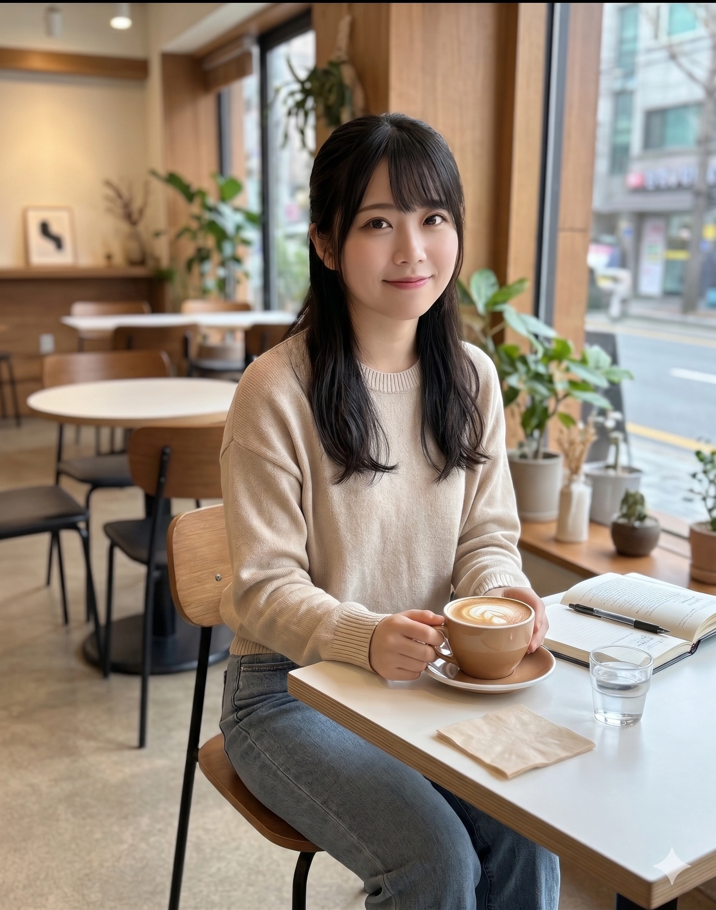
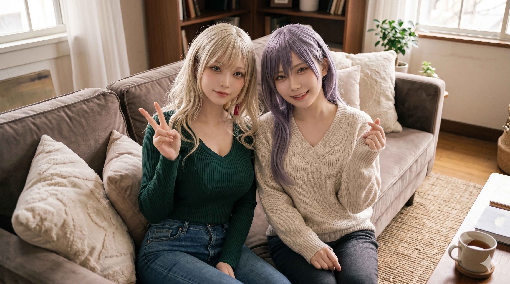

1. 개요
"이, 이런 저라도... 함께 밴드 해줄래요...? 창전구의 부잣집 아가씨들 사이에서 저 혼자만 평범하고 가난한 미운 오리 새끼인 줄 알았는데... 숙미 언니의 노래와 모니카 친구들이 제게 푸른 날개를 달아주었어요." — 마서령
"학부 때 이론 공부는 정말 거북했지만...... 뭐, 뭐어, 이제 졸업도 했으니 그런 건 미크론 미크론(ミクロンミクロン)! 기타와 의상, 그리고 동곡동·투자동의 분위기를 띄우는 건 이 기유호 사장님에게 맡겨 두라구~!" — 기유호
"심 씨(히로마치)의 눈은 못 속인다고~? 후후, 심 씨는 그냥 어디에나 있는 지극히 '보통(평범)'인 경제학도 출신 직장인이라니까~?" — 심나나
"이런 때야말로 반장(위원장) 출신 본부장인 이주시가 나설 때야! 내가 Morfonica의 리더이자 『쌍엽푸드』 신사업본부장이니까, 곤란한 일이 있으면 뭐든지 상담해 줄게! 흐흥~♪" — 이주시
"음악은 조화(Harmony)잖아. 감정에 휘둘려 박자와 음정을 흐트러뜨리는 건 에너지 낭비야. ...내가 되고 싶은 자신이 있다면, 그건 마서령(쿠라타) 씨, 당신 같은 사람일지도 모르겠네." — 조류희
효빈광역시 남동부의 최고 부촌이자 '환상과 지성의 도시'로 불리는 창전구(倉田區)에서 탄생한 2003년생 동갑내기 5인조 심포닉 걸즈 록 밴드. 일반적인 록 밴드 편성에 어쿠스틱/일렉트릭 5현 바이올린(조류희)이 포함된 독창적인 사운드를 구사하며, 멤버 전원이 일본의 미디어 믹스 프로젝트 《BanG Dream!》의 밴드 Morfonica 캐릭터들과 출신 행정구역 한자, 생년월일, 외모, 악기 세팅, 심지어 담당 성우(신도 아마네, 스구타 히나, 니시오 유카, mika, Ayasa)의 본체 특기까지 200% 동기화된 완벽한 3차원 현신 그룹이다.
원작 애니메이션의 Morfonica가 초등부부터 올라오는 초특급 사립 귀족학교(츠키노모리 여학원)에 진학한 평범한 중산층 보컬과 4명의 부잣집 아가씨들의 이야기라면, 효빈시 현실 버전의 『모르포니카』는 훨씬 더 극적이고 입체적인 계층 서사를 지니고 있다. 멤버들이 다닌 창전구의 명문 월삼여자고등학교(月森女高)가 자사고가 아닌 '창전구 학군 소속 고교 평준화 일반계 고등학교'였던 덕분에, 유년 시절 가세 하락과 질병으로 효빈시 최악의 마굴이었던 서구 족포초등학교에서 처절한 학교폭력을 겪고 창전구 칠심3동 다세대 빌라촌으로 탈출해 온 저소득층(차상위계층) 소녀 2명(마서령·심나나)과, 창전구를 지배하는 초특급 재벌·엘리트 영애인 '창전구 3대 쌉부자' 3명(이주시·기유호·조류희)이 한 교실에서 운명처럼 만나 결성되었기 때문이다![1]간혹 타 지역 사람들이 '월삼여자고등학교'라는 교명만 보고 덕빈북도 빈주시 장기구 월삼동(月三洞)에 있는 학교로 착각하지만, 빈주시 월삼동과 효빈시 남동부 창전구는 물리적 거리가 상당히 먼 전혀 다른 권역이다! 월삼여고(月森女高)는 창립자의 아호 '달빛 비치는 숲(月森, 츠키노모리)'에서 따온 100% 창전구 학군 소속 학교다.
2022학년도 대입에서 5인방 전원이 국립 명문 효빈대학교 22학번으로 나란히 입학한 뒤 휴학 한 번 없이 4년을 완주하여 2026년 2월 전원이 학사 졸업(수석 및 우등 졸업)에 성공했다. 2026년 현재 만 22~23세가 된 그녀들은 효빈대 부설 종합사회복지관 1급 사회복지사 겸 사례관리상담사(마서령), 패션 브랜드 『TOEK-U』 대표이사 CEO 겸 (주)토에크 상무(기유호), (주)토에크 수석 아트 디렉터 겸 효빈경제연구원 수석 애널리스트(심나나), 외식 재벌 『쌍엽푸드』 신사업본부장 겸 수석 영양사(이주시), 『블루벨벳 자산운용』 퀀트 전략이사 겸 효빈시향 최연소 객원 악장(조류희)으로 환골탈태하여 창전구의 지성·경제·문화를 이끄는 주역으로 활약하고 있다.
2. 멤버 및 핵심 관계자 소개 (3D 현신)
5인방 전원의 성명과 출생지·거주지 법정동 한자가 원작 캐릭터와 100% 일치하며, 2027년 9월 개통 예정인 하늘색 효빈 도시철도 창전선(#33AAFF)의 핵심 경유지(팔조~창전구청~칠심~쌍엽중앙)를 그대로 관통한다.
2.1. 창전구의 푸른 나비 5인방 (Core 5)

창전구(倉田區=쿠라타) 창전동·마시동·진백동(眞白洞=마시로)의 살아있는 여왕이자 효빈대 부설 종합사회복지관 1급 사회복지사 겸 사례관리상담사. 원작보다 4cm 더 자란 158cm에 헐렁한 카디건 속 B83(꽉 찬 C컵) 베이글 체형을 숨긴 백은발 요정이다. 초3 때 족포초 학폭 지옥을 용기 있는 고백으로 최초 탈출해 폐교의 나비효과를 일으킨 선구자이며, 시금치·당근을 보면 울먹이고 비밀 수첩에 『블러디 라비앙 로즈』 중2병 시를 적는 귀여운 공상가다.
창전구 동곡동(桐谷洞=키리가야)·투자동(透子洞=토우코)이 낳은 영 앤 리치 패션 여왕이자 하이엔드 스트릿 브랜드 『TOEK-U』 대표이사(CEO) 겸 모기업 (주)토에크 상무이사. 164cm·B86(D컵)의 8등신 금발 웨이브 모델 피지컬과 육상부 500m 여제의 각력을 지녔다. 새벽 5시에 기상하는 엄격한 종갓집 가풍 덕분에 예절이 뼛속까지 바르며(정작 아침 SNS 답글 달다 지각함), 친구의 실수를 먼저 감싸 안고 아기 돌보기(성우 스구타 히나 보육교사 기믹)까지 만렙인 '갸루 보살 대인배'다.

창전구 칠심동(七深洞=나나미)·광정동(廣亭洞=히로마치)·보통동(普通洞)을 지배하는 3인칭('심 씨') 실눈 천재. 효빈대 경제학과를 전체 수석 졸업하고 (주)토에크 수석 콜라보 아트 디렉터 겸 효빈경제연구원 수석 애널리스트로 재직 중이다. 과거 족포초에서 천재성 때문에 일진들에게 도둑 모함을 당한 상처로 중·고교 내내 킬러 문항을 다 풀고 고의로 틀려 '전교 평균 점수(150등)'를 맞췄던 무서운 기만자였으나, 현재는 로열티 수억 원을 벌며 환골탈태한 마서령의 영혼의 단짝이다.

창전구 쌍엽동(双葉洞=후타바)의 외식·급식 재벌 『(주)쌍엽푸드 시스템』 회장의 장녀이자 현 신사업본부장(R&D 상무 겸 수석 영양사), 그리고 우택동 『하규미 커피점』 주말 명예 점장. 12년 반장·4년 과대표 출신으로 "이런 때야말로 반장이 나설 때야! 흐흥~"이라며 앞장선다. 150cm·B75(AA컵)의 아담한 체구 탓에 조류희의 초등학생 동생으로 오해받아 눈물의 블랙커피를 마시지만, 허스키한 중저음 보이스와 일본 ESP 유학파 정체(整体) 세라피스트 도수치료 실력을 갖춘 외유내강 명품 리더다.

창전구 팔조동(八潮洞=야시오)·유류동(瑠唯洞=루이) 최상류층 법조·금융 가문의 영애. 효빈대 수학과·관현악과 복수전공을 4.5 만점 수석 졸업한 『블루벨벳 자산운용』 퀀트 전략이사 겸 효빈시향 최연소 객원 악장이다. 169cm 장신에 B94(G~H컵, 세계관 4대 거유 윗가슴둘레 1위!)의 성숙한 피지컬과 백화점 점원 코디 탓에 고1 때부터 '재벌 사모님'으로 오해받았다. 감정을 배제한 팩트 폭격기지만 마서령 앞에서는 한없이 다정해지며, 새알심 단팥죽·버블티 포인트카드·반려묘 '도야 님'에 죽고 못 사는 갭 모에의 소유자다.
2.2. 멘티·후원자 및 가족 세력 (Extended Allies & Family)
마서령·심나나보다 7살 위인 족포초등학교 학폭 피해자 대선배이자 효빈대 사회복지학대학 직속 선배. 두 소녀가 유년기 지옥을 버텨내게 해준 정신적 등대였으며, 시장 취임 후 족포초를 폐교해 『서구 정신건강증진센터』로 리모델링하고 『블루버드 멘토링단』을 창설했다. 윤재훈 일당의 고발 공작을 막기 위해 마서령·심나나와 만날 때마다 공직선거법 제112조에 의거 '1원 단위 더치페이'를 칼같이 지키는 클린 행정 파트너다.

마서령과 똑같이 성우 신도 아마네가 연기하는 하스노소라 '카츠라기 이즈미'의 현실 본체인 이주미(170cm, B93)와 단짝 유세라(세라스 본체). 족포초 직속 후배인 주미가 '감정 거세' 트라우마로 국어 시(詩)를 읽지 못하고 '바보 위장'으로 코딩 힘을 빼고 있을 때, 마서령이 시를 '감정의 암호 코드'로 치환해 치유해 주고 심나나가 C++ 알고리즘과 수리통계를 전수해 안천과고에 합격시켰다. (단, 주미가 서령의 중2병 노트를 소리 내어 읽는 대참사도 있었다.)

마서령의 동생 마서하(07년생)는 언니의 미셸 인형에 침을 흘리고 비프 스프 고기만 건져 먹은 뒤 언니 그릇에 시금치 산을 쌓아놓는 일진(?) 동생(밖에서 언니 건드리면 팔씨름 챔프 주먹으로 아작냄)이며, 심나나의 동생 심나래(06년생)는 언니의 한정판 해피밀 장난감을 훔쳐 가 나나의 실눈을 번쩍 뜨게 만드는 천적이다. 반면 이주시의 두 동생 이청이(11년생)·이향리(14년생)는 큰언니와 데칼코마니처럼 똑같이 생긴 천사 자매다(단, 막내 향리는 큰언니보다 조류희를 더 따른다).
3. 밴드 결성 및 기적의 인간 승리 역사
단순히 부잣집 아가씨들의 우아한 취미 활동이 아니라, 밑바닥 반지하의 아픔을 겪은 소녀들과 상류층 소녀들이 서로의 결핍을 채워주며 성장한 눈물겨운 서사다.
3.1. 생지옥 『족포초등학교』 동반 탈출과 칠심3동 빌라촌의 눈물
2011년(초등학교 2학년 무렵), 창전구에 살던 마서령과 심나나의 가정에 동시에 비극이 덮쳤다. 서령이네는 아버지가 일하던 인쇄소 부도와 전세 사기가 겹쳤고, 나나네는 조각가·화가였던 부모님이 기획 미술 사기를 당한 충격으로 어머니(한수미 여사)가 희귀 난치성 신장 질환으로 쓰러져 아버지(심재원 씨)가 건설 일용직(노가다)에 뛰어들어야 했다. 결국 두 가정 모두 집세가 가장 싼 슬럼가였던 서구 내성동의 낡은 반지하 단칸방으로 밀려났고, 두 소녀는 효빈시 역사상 최악의 마굴이었던 족포초등학교(2024년 폐교)로 전학을 가게 되었다.
전학 첫날부터 지옥이 열렸다. 못생긴 여왕벌 일진 패거리(양예원·박민지류의 직계 후배들)는 인형처럼 하얗고 예쁜 서령이의 머리카락에 풍선껌과 물감을 뭉개 붙여 강제로 가위질을 하고, 어머니가 밤새 떠준 파란 나비 손뜨개 가방에 급식실 잔반 구정물을 부어 짓밟았으며, 실내화에 압정을 넣고 싫어하는 시금치·당근을 억지로 입에 쑤셔 넣는 식고문을 가했다. 옆 반의 심나나 역시 몽당연필로 미술 대상과 수학 경시대회 만점을 동시에 타자, 일진들과 미적분 선행학습 막장 학부모들이 "시멘트 나르는 노가다 거지 년이 교무실에서 시험지를 훔쳐봤다!"며 만점 시험지를 찢고 어머니를 위해 그린 수채화에 먹물을 부었다. 당시 부패한 담임교사들은 가해 학부모 눈치를 보며 오히려 피해 소녀들을 가스라이팅했다.
살아남기 위해 나나는 자신의 천재성을 철저히 봉인하고 일부러 시험 문제를 틀려 반 평균(75점)만 맞추는 눈물겨운 '보통(평범) 위장 기제'를 시작했고, 서령이는 선택적 함구증 직전까지 몰렸다. 그러던 초등학교 3학년 가을, 나나의 아버지가 고향 창전구 칠심동 아파트 신축 현장 반장으로 스카우트되고 어머니가 사능동 효빈대병원 국비 지원 대상자로 선정되면서 나나가 먼저 칠심초등학교로 긴급 복귀하게 되었다! 떠나기 직전 나나가 서령이의 손을 잡고 "시로 쨩! 절대 참지 말고 부모님께 다 말씀드리고 꼭 창전구로 따라와야 해!!"라고 용기를 불어넣어 주었고, 일주일 뒤 파란 나비 인형마저 커터칼로 난도질당한 서령이가 부모님 앞에 무릎을 꿇고 모든 학폭 사실을 피를 토하듯 고백했다.
극대노한 서령이의 아버지 마정호 씨는 이튿날 아침 작업복 차림으로 족포초 교무실로 쳐들어가 책상을 뒤엎을 기세로 사자후를 토해낸 뒤, 친척 돈을 영끌해 창전구 칠심3동 다세대 빌라(심나나네 바로 옆집!)로 이사하며 창전초등학교로 긴급 재전학을 단행했다![2]이 '심나나-마서령 연쇄 탈출 사건'은 당시 족포초에 남아 고통받던 1살 후배 고노애와 이후 유입된 이주미·유세라 등 피해 학부모들에게 "참으면 아이가 죽는다, 무조건 공론화하고 탈출해야 산다"는 각성을 불러일으켜 족포초가 신입생 0명으로 2024년 최종 폐교되는 역사적 도화선이 되었다! 창전구로 돌아온 두 소녀는 당시 효빈대 복지대 실습생이던 오다혜('덕후 화타') 선생님의 미술·점토 치료를 받으며 칠심3동 반지하 계단에서 컵라면 국물을 나눠 먹는 평생의 소울메이트로 자라났다.
3.2. 창전구 평준화 일반고 『월삼여고』 진학: 문어 비엔나와 트러플의 조우
칠심중학교를 졸업한 마서령과 심나나는 파란 나비 브로치 세일러복으로 유명한 창전구의 명문 월삼여자고등학교에 고교 평준화 추첨 배정으로 나란히 입학했다. 그러나 평준화 일반고라고는 해도 창전구 자체가 효빈시 최고 부촌이다 보니 반 친구들의 절반 이상이 진짜배기 부잣집 영애들이었다.
입학 첫 주 점심시간, 1학년 A반 반장인 급식 재벌 장녀 이주시가 3단 보온 찬합에서 전복 갈비찜과 트러플 리조또를 꺼내고, 옆 반에서 놀러 온 패션 재벌 딸 기유호가 특상급 참치 대뱃살 초밥을 펼쳤을 때, 어머니가 특가 세일 소시지에 검은깨로 눈코입을 붙여서 싸주신 '문어 모양 비엔나소시지와 하트 계란말이 도시락'을 들고 있던 서령이는 극심한 빈부격차에 위축되어 도시락통을 등 뒤로 숨기려 했다.
그러나 그것을 발견한 기유호와 이주시의 반응은 서령이의 예상을 완전히 뒤엎었다!
기유호: "잠깐만 시로(서령)야!! 이 소시지 뭐야?! 다리가 여덟 개 달린 문어 모양이잖아?! 레알 우주 레벨로 귀엽다!! 인스타에 찍어 올려도 돼?! 내 참치 초밥 다 줄 테니까 문어 두 마리만 나 주라!!"
이주시: "므므므... 이 정교한 칼집과 고소한 케첩 냄새... 우리 아빠 회사(쌍엽푸드) 연구소에서도 아직 개발 못 한 궁극의 비엔나 조형 예술이야!! 마서령 양, 내 전복 갈비찜이랑 제발 교환해 줘! 반장의 명령이야!"
자신의 소박한 도시락을 비웃기는커녕 진심으로 신기해하며 맛있게 먹어주는 부잣집 친구들의 순수함에 서령이는 마음의 벽을 허물었고, 이주시는 아버지 이창훈 회장에게 건의해 다음 달 효빈시 전 고교 급식 메뉴에 『서령 & 주시의 해피 문어 비엔나 카레 세트』를 정식 출시하고 수익금을 저소득층 장학금으로 기부했다.
3.3. 『RiNG 효빈점』의 별빛과 초기 악플·2장 탈퇴 소동 극복기
고1 봄날, 부촌 학교 분위기에 기가 죽어 한숨만 쉬던 서령이를 위해 반장 이주시가 "이런 때야말로 반장이 나설 때야!"라며 서령이와 기유호의 손을 잡고 중앙로 『RiNG 효빈점』에서 열린 5밴드 합동 라이브 공연장으로 데려갔다. 그 무대 위에서 별 모양 기타를 메고 눈부시게 노래하는 『포핀☆스타』 보컬 강숙미의 모습에 심장이 요동친 세 사람은, 교실 뒤편에서 구경하던 심나나와 전교 1등 천재 바이올리니스트 조류희까지 설득해 마침내 5인조 심포닉 록 밴드 『모르포니카(Morfonica)』를 결성했다.
물론 시련도 있었다. 첫 라이브에서 긴장한 서령이의 목소리가 떨려 인터넷에 '못부르니카'라는 악플이 달리자, 옛 트라우마가 도진 서령이가 "다 유호 쨩이랑 주시 쨩이 멋대로 라이브 잡아서 그래! 나 밴드 안 해!"라며 남탓을 하고 도망쳤다. 그러나 기유호는 화내기는커녕 먼저 다가와 "네 부담감을 눈치채지 못해 미안해, 네 페이스대로 천천히 하자"라며 대인배처럼 감싸 안았고, 빗속에서 우산을 씌워준 강숙미와 오다혜 언니의 격려에 서령이는 눈물로 사과하며 복귀해 『Daylight』를 완벽히 소화해 냈다.
고2 때는 완벽주의자 조류희가 자신도 모르게 감정에 따라 행동하는 변화를 받아들이지 못해 돌연 밴드 탈퇴를 선언하는 최대 위기(2장 『fly with the night』 고증)가 찾아왔다. 이때 심나나가 "루이루이, 이미 악보 코드 진행부터 감정적으로 쓰고 있었으면서 거짓말하기는~"이라며 정곡을 찔렀고, 학생회실로 찾아간 마서령이 "류희 씨는 완벽해서 부럽지만 전혀 어른이 아니에요! 왜 자기 자신의 마음만은 믿어주지 않는 건가요?! 스스로를 믿어주는 자신이 되고 싶지 않나요?!"라고 일침을 날렸다. 생애 처음으로 자신의 고독을 꿰뚫어 본 서령이의 말에 얼음이 녹아내린 류희는 "내가 되고 싶은 자신이 있다면... 그건 마서령 씨, 당신 같은 사람일 겁니다"라며 미소와 함께 복귀했다.
3.4. 2026년 효빈대 22학번 전원 학사 졸업 및 초엘리트 사회인 도약
원작과 달리 현실의 모르포니카 5인방은 고등학교 2학년 여름 칠심3동 지하 아틀리에에서 심나나의 최우수상 유화 캔버스가 발각되며 나나가 '150등 평범 연기' 봉인을 해제한 것을 기점으로, 멤버 전원이 학업과 진로에서도 초인적인 성취를 거두었다.
자신을 구해준 박효빈 시장과 오다혜 언니처럼 상처 입은 아이들을 치유하겠다고 결심한 마서령은 조류희·심나나에게 모르는 문제를 끝까지 물어보며 밤잠을 줄여 공부해 효빈대학교 사회복지상담학과(22학번)에 4년 전액 장학생으로 합격했고, 심나나는 부모님의 예술품 저작권을 되찾기 위해 미대가 아닌 경제학과(22학번)에 수능 만점급 전체 수석으로 입학했다. 이주시는 식품영양학과(22학번) 수석, 기유호는 류희의 스파르타 과외와 디자인 공모전 대상으로 의류학과(22학번) 합격, 조류희는 수학과·관현악과 복수전공(22학번) 전체 수석으로 입학했다.
그리고 2026년 2월, 5인방 전원이 현역으로 학사 학위를 취득하고 사회로 진출하여 현재 효빈대 사회복지관 사회복지사(마서령), 패션 기업 CEO 겸 상무(기유호), 수석 아트 디렉터 겸 애널리스트(심나나), 외식 대기업 신사업본부장(이주시), 자산운용사 퀀트 이사 겸 시향 객원 악장(조류희)이라는 20대 초반으로서는 믿기 힘든 프로페셔널 커리어와 밴드 활동을 완벽하게 병행하고 있다.
4. 창전구 지명 평행이론과 내부 대환장 문화
4.1. 창전구 10대 법정동 완벽 매칭과 '월삼여고' 지리 고증
효빈광역시 창전구는 구청 명칭부터 산하 법정동까지 Morfonica 5인방의 성명을 이루는 한자로 설계된 기적의 성지다.
- 마서령 (쿠라타 마시로 / 倉田 ましろ): 창전구(倉田區) 창전동(倉田洞 = 쿠라타) + 마시동(馬市洞)·진백동(眞白洞 = 마시로)·시로동(始路洞)! (어머니가 마시동 마시로 24번지에서 뜨개질 공방을 운영 중이다.)
- 기유호 (키리가야 토우코 / 桐ヶ谷 透子): 동곡동(桐谷洞 = 키리가야) 출생 + 투자동(透子洞 = 토우코) 토에크 타워 펜트하우스 거주!
- 심나나 (히로마치 나나미 / 広町 七深): 칠심동(七深洞 = 나나미) 출생 + 광정동(廣亭洞 = 히로마치) + 보통동(普通洞 = 말버릇 '보통') 주상복합 거주!
- 이주시 (후타바 츠쿠시 / 二葉 つくし): 쌍엽동(双葉洞 = 후타바) 쌍엽포레스트 대저택 거주 및 2호선 쌍엽역·엽천역 명예 역장!
- 조류희 (야시오 루이 / 八潮 瑠唯): 팔조동(八潮洞 = 야시오) 법조타운 출생 + 유류동(瑠唯洞 = 루이) 프라이빗 빌라 거주! (고로아와세 84061)
4.2. 전교 평균 0.01점 오차 저격수 & 리듬게임 ALL GOOD 기만자
베이시스트 심나나가 보여준 '평범(보통)에 대한 광기 어린 집착'은 월삼여고와 동곡동 오락실의 전설적인 괴담이다. 고2 때까지 나나는 족포초 트라우마 때문에 "전교생 300명 중 정확히 150등을 유지해야 안전하다"며, 수험생 99%가 못 푸는 수학 30번 킬러 미적분 문항을 단 2줄로 풀어놓고는 전교생 오답률을 역산해 3번·7번 기초 문제를 고의로 틀려 4번 연속 전교 150등(평균 점수 오차 0.01점 미만)을 맞췄다! 이를 학생회장 조류희가 데이터 그래프로 적발하고 마서령이 눈물로 위로해 봉인을 해제하자, 다음 모의고사에서 가볍게 전국 수석을 찍으며 류희의 전교 1등 자리를 갈아치웠다.
또한 오락실에 처음 간 날에는 리듬게임(걸파·구루미쿠)에서 "퍼펙트는 너무 튀고 미스는 못해 보이니까 정중앙인 GOOD(보통)만 쳐야지~"라며, 933노트 고난도 곡을 퍼펙트 0개·미스 0개·GOOD 933개(『ALL GOOD 풀콤보』)로 클리어해 기유호의 멘탈을 가루로 만들었고, 보통동 『평범박물관』 스텔스 챌린지 존에서는 호흡과 보폭을 대한민국 20대 여성 평균치에 100% 일치시켜 AI 사이렌을 단 한 번도 울리지 않고 돌파한 뒤 실물과 구분 불가능한 'UV 레진 초코칩 쿠키 브로치'를 선물해 이주시의 앞니를 부러뜨릴 뻔했다.
4.3. 기유호의 단팥죽 대참사와 조류희의 500m 스프린트 목덜미 진압
감성파 인싸 기유호와 효율주의 원칙론자 조류희(통칭 토우루이)는 만나기만 하면 으르렁대는 앙숙이자 최고의 시너지 파트너다. 한여름 폭염 날 유호가 류희와 친해지려고 동곡동에서 사능동까지 뛰어갔다 오며 '차가운 새알심 단팥죽'을 사 왔는데, 류희가 단팥죽에 온도계를 꽂아보더니 "얼음이 녹아 24도가 되었군요. 차가운 단팥죽은 4~8도일 때 식감이 최적화됩니다. 풍미가 훼손된 단팥죽은 사양하겠습니다"라고 말해 유호의 뚜껑을 열리게 만들었다.
이어진 합주에서 유호가 연습을 대충 해와 솔로 파트를 뺏기게 되자 "안 해, 도망갈 거야!!"라며 육상부 500m 챔프의 다리로 전속력 도주를 시도했으나, 모든 운동부 스카우트를 거절한 숨은 피지컬 괴물 조류희가 169cm의 긴 다리로 유호보다 1.5배 빠른 스프린트를 발휘해 불과 100m 만에 유호의 뒷덜미를 가볍게 낚아채 잡아 왔다(...)! 물리력에서까지 완패한 유호가 류희의 악보 노트를 몰래 봤다가, 그 안에 적힌 하루 5~10시간의 연습 기록과 멤버별 감사원 보고서급 분석 노트를 보고 반성해 손가락에 피물집이 잡히도록 특훈하여 마침내 류희에게 솔로 파트를 인정받았다.
4.4. 19cm 키 차이(169cm vs 150cm) 어린이 해피세트 굴욕과 리더 결석 대재앙
만 23세 대졸 성인 직장인임에도 키가 150cm(B75 AA컵)에서 멈춘 리더 이주시와, 고1 때부터 백화점 점원이 골라준 명품 코디를 입고 다녀 재벌 사모님으로 오해받는 169cm(B94 G~H컵)의 조류희가 나란히 서면 무려 19cm의 키 차이가 난다. 두 사람이 동곡동 패스트푸드점에 시장조사를 갔을 때, 알바생이 주시를 류희의 늦둥이 초등학생 여동생(혹은 딸)으로 착각해 "따님분께는 장난감이 든 어린이 해피세트를 반값에 드립니다~"라고 안내하는 대참사가 벌어졌고, 류희가 진지하게 "효율적으로 어린이 세트를 드시겠습니까?"라고 물어 주시가 오열하며 사약 같은 투샷 블랙커피를 원샷해야 했다.
하지만 평소 기유호에게 '햄스터 반장(후스케)'이라고 놀림받는 주시가 겨울 감기로 단 하루 합주에 결석했을 때, 주시가 없는 합주실은 1) 연습 곡을 정하는 사람 전무, 2) 유호와 류희의 5분 만의 대판 말싸움, 3) 중재자가 없자 구석에서 땅을 파며 해체 망상에 빠진 마서령, 4) 옆에서 팝콘 뜯으며 구경만 하는 심나나라는 대재앙(모니카판 'Don't leave me, Lisa!')을 맞이했다. 결국 1시간 만에 합주실이 무법지대가 되자 4명 전원이 쌍엽동 주시네 집 침대 앞으로 달려가 무릎을 꿇으며 "모르포니카의 영원한 리더는 이주시뿐이야!!"라고 빌어야 했다.
4.5. 1호선 회송 열차 '키사라기역' 조난 소동과 『블러디 라비앙 로즈』 강제 영창
보컬 마서령의 4차원 공상 벽이 일으킨 양대 레전드 해프닝이다.
- 1호선 회송 열차 탑승 및 '키사라기역' 조난 소동 (걸파☆피코 오오모리 19화): 겨울밤 보통역에서 1호선을 탄 서령이가 히터 바람에 졸다가 창전구청역을 지나 외곽 시골 간이역인 '고해역' 너머까지 끌려갔다. 어두운 승강장에 내린 서령이가 단톡방 보이스톡으로 "나 이세계 키사라기역에 빠졌어! 미셸 괴물한테 잡아먹히면 어떡해 ㅠㅠ 아, 저기 너희들이 탄 파란 전철이 오네, 지금 탈게!"라며 전화를 끊었는데, 정작 멤버들은 아직 보통역 카페에 있었고 서령이가 탄 열차는 승객 없는 차량기지 입고용 회송 열차였다! 즉시 이주시가 아버지 회사 리무진 밴을 호출하고 팔조차량기지 명예 소장인 조류희가 교통공사에 연락해 직전 역에서 서령이를 무사히 구조해 냈다.
- 중2병 공상 노트 『블러디 라비앙 로즈』 로비 공개 영창 대참사 (피코 피버 10화): 서령이가 새벽 감성에 취해 중2병 시구(詩句)를 적어둔 검은 수첩을 『RiNG 효빈점』 로비에 흘렸는데, 하필 중2병 드러머 태아연(우다가와 아코 본체)이 그것을 주워 '암흑 성전의 계시록'이라며 품에 안았다. 서령이가 돌려달라고 애원하자 아연이는 타 밴드 멤버 20여 명이 지켜보는 로비 한복판에서 "주인이라는 증거로 13페이지 주문을 직접 영창해 보시죠!"라고 요구했고, 결국 서령이가 얼굴이 터질 듯이 붉어진 채 "우으으... 내 등에 돋아난 푸른 모르포 나비의 날개가 칠흑 같은 어둠과 함께하리...! 『선혈의 장밋빛 인생(블러디 라비앙 로즈)』...!!"라고 낭독해 아연이를 광신도로 입교시키고 본인은 하얗게 불타버린 재가 되었다.
5. 전설적인 참교육 및 '창전 리버럴' 정치·상권 수호 일화
고소득·고학력 부촌이면서도 권위주의와 혐오를 극혐하는 '창전 리버럴(Changjeon Liberal)'의 핵심 주역들로서, 모두 더불어민주당 권리당원이며 창전구를 더럽히는 극우 보수 빌런들을 완벽하게 분리수거한다.
5.1. 2017년 3호선 투자(透子)역 윤대환 '스마트폰 LED 플래시' 태양권 참교육
기유호가 동곡중학교 2학년이던 2017년 가을, 토우코(透子)의 한자와 똑같은 3호선 투자역 앞 패션 거리에서 인플루언서 언니들과 룩북 셀카를 찍고 있을 때였다. 출소 후 배회하던 전직 시장 윤대환이 나타나 "어린 계집애들이 천박하게 화장하고 폰질이나 해대니 나라가 망한다!"며 유호의 스마트폰을 빼앗으려 손을 치켜들었다.
겁 없는 인싸 기유호는 도망가기는커녕 현장의 패션 피플 50여 명을 향해 "얘들아!! 저 어두컴컴한 구시대 아저씨한테 우리 투자(透子)동의 반짝반짝한 최신 유행 조명을 맛보여 주자!! 전원 스마트폰 카메라 LED 플래시 최대 밝기 ON, 발사아아ㅡ!!"라고 외쳤다. 일제히 정조준된 태양권급 광량에 시야를 잃은 윤대환이 비틀거리자 육상부 에이스 유호가 재빠르게 다리를 걸어 넘어뜨려 경찰에 인계했고, 성우 스구타 히나가 트위터에 "역시 토우코 짱의 팬들은 반짝반짝한 걸 무기로 쓸 줄 아네요! ✨ 폭력은 전혀 유행하지 않아요! 아저씨, 언팔로우 당하셨네요~ 👋📱"라고 샤라웃을 날려 세계적인 화제가 되었다.
5.2. 2024년 총선 윤재훈 5.2% 폭망: 길거리 암산 팩폭과 푸른 장미 소금 세례
2024년 제22대 총선 당시 창전구 갑에 국민의힘 후보로 출마한 윤재훈이 칠심역 사거리에 [박효빈 시정의 서브컬처·청년 예산 때문에 창전구 재정자립도가 폭락했다!]는 가짜 통계 현수막을 걸고 "당선되면 파란 나비 로고와 블루버드 멘토링 예산을 전액 삭감하겠다!"고 어그로를 끌었다.
마침 떡볶이를 먹고 나오던 효빈대 경제학과 수석 심나나가 대형 스케치북에 단 1분 만에 통계청 KOSIS 지표와 회귀분석 수식을 암산으로 그려 넣더니, "저기요~ 윤재훈 아저씨~! 분모에서 창전선 국비 매칭 기금을 누락시키고 기준 연도를 2007년(아저씨 아빠 윤대환 전 시장님이 시정 말아먹었을 때!) 수치랑 바꿔치기해서 사기 친 거네요~? 박효빈 시장님 취임 후 창전구 상권 매출은 연평균 +34.8% 성장(p-value less than 0.0001)했는데요?! 허위사실공표죄로 선관위에 바로 신고해 드릴까요~?"라고 길거리 공개 팩폭을 날려 현수막을 철거시켰다.
이어 창전구청역 광장 자유발언대에 오른 마서령이 어머니가 떠준 파란 나비 카디건을 입고 떨리는 목소리로 "윤재훈 후보님의 아버지가 망쳐놓은 족포초에서 울던 저를 다시 웃게 해준 건 창전구의 이웃들과 청년 멘토링 선생님들이었어요! 약자들의 사다리를 걷어차는 혐오 후보에게 창전구의 품격을 보여주세요!!"라고 눈물의 연설을 펼쳤고, 기유호와 이주시가 드론으로 푸른 장미 꽃잎(과 유세차 앞 굵은소금)을 살포하며 민주당 추산령 후보의 85.09% 압승(윤재훈 5.20% 폭망)을 견인했다.
5.3. 2025년 창전역 한자 문맹 테러범(02년생 A씨) 검거와 한자 깜지 교정
2025년 HAF 기간 중, 윤재훈 추종자인 02년생 남성 A씨가 사능역에서 망언을 하다 성우 신도 아마네(04년생)에게 "저보다 2살이나 많은데 지능 수준은 제가 훨씬 높은 것 같네요. 한심해"라는 생중계 팩폭을 맞고 앙심을 품어, 마시로의 성지인 1호선 창전역(倉田驛)에 락카 테러를 하러 잠입했다.
마침 현장에서 스탬프 랠리 안내 봉사를 하던 마서령이 안내 판넬을 방패처럼 내밀며 "창전역(倉田驛)은 조선 시대 대동미를 보관하던 곡물 창고(倉)와 밭(田)이라는 뜻의 우리 역사 지명이에요! 한자도 모르면서 락카질하지 마세요!"라고 맞섰고, 169cm의 조류희가 앞을 가로막으며 "아마네 씨의 분석이 100% 정확했군요. 02년생 성인이 한자 8급 '창고 창(倉)' 자도 못 읽어 테러를 하다니 지능지수가 의심스럽습니다"라며 역사학과 학우들을 지휘해 A씨를 포위·체포시켰다.
이후 법원에서 사회봉사 200시간 명령을 받은 A씨가 『효빈대 사회복지관 및 서구 정신건강증진센터(구 족포초)』에 출석한 첫날, 그를 맞이한 담당 교정 사회복지사가 다름 아닌 03년생 마서령이었다! 서령이가 천사 같은 미소로 "어라...? 창전역 락카 오빠(02년생)...? 제가 이번 달 반성문 첨삭이랑 기초 한자 8급 교정 사례관리를 맡은 사회복지사 마서령이에요... 자, 오늘부터 '창고 창(倉)' 자 1,000번 깜지 쓰기부터 시작할까요...?"라고 맞이하자 A씨는 무릎을 꿇고 오열했다.
5.4. 쌍엽 가디언즈 냉동 탑차 포위 작전과 2023년 칠심역 1초 업어치기 훈수
창전구 쌍엽동의 자율방범 조직 『쌍엽 가디언즈』 청년총대장인 이주시는, 선거철 국민의힘 유세차가 쌍엽초 앞 스쿨존 황색 실선에 불법 주차를 하고 "무상급식 예산을 깎겠다"고 망언하자 즉시 가디언즈 대원 100명을 소집해 안전신문고 1분 간격 연속 신고를 넣는 동시에 아버지 회사(쌍엽푸드)의 5톤 냉동 탑차 4대를 합법 구역에 배치해 유세차 시야를 완벽히 차단하는 리더십 참교육을 선보였다.
또한 2023년 2호선 칠심역 대합실에서 나나미 생일 광고판을 찍던 유도부 출신 오타쿠 팬에게 만취한 혐오 진상이 주먹을 휘두르려 했을 때, 첫 패밀리 레스토랑 알바를 마치고 지나가던 심나나가 천재적인 동체시력으로 진상의 무게중심 결함을 간파하고 "앗! 거기 안경 쓴 팬 오빠~! 저 아저씨 오른발 축이 15도 기울어져 있으니까 왼발을 복사뼈 뒤에 걸고 당기면 '평범하게' 넘어갈 것 같은데~?!"라고 훈수를 던져 단 1초 만에 완벽한 한판 업어치기 참교육을 성사시켰다.
5.5. 팔조차량기지 0.00% 무고장 바이올린 전설과 마시동 뜨개질 공방 대박
3호선 시종착역 인근 팔조차량사업소 및 효빈철도박물관의 명예 소장을 맡고 있는 조류희는 매년 11월 19일(본인 생일) 기지 정비고 앞 특설 무대에서 5현 바이올린 독주회를 연다. 류희는 "정비고의 높은 천장이 1.8초의 잔향 시간을 형성해 음향 공명에 효율적일 뿐"이라고 말하지만, 류희가 연주회를 연 이후로 팔조기지 소속 3호선 1세대 노후 전동차들의 연간 고장률이 0.00%로 수렴하는 기적이 일어나 기지 공식 작업 BGM으로 채택되었다.
한편 마서령이 어머니 서은정 여사와 함께 뜬 '모르도리(창전구 파란 나비 마스코트) & 미셸 뜨개질 키링'이 기유호의 인스타를 타고 수만 건 주문 폭주하면서, 마시동 마시로 24번지에 오픈한 『마시로의 푸른 나비 수제 뜨개질 공방』이 연 매출 수억 원의 대박을 터뜨려 서령이네 집안 역시 가난을 완전히 졸업하고 부유한 중산층 이상으로 도약했다! (3선 전역헌 창전구청장이 이 뜨개질 인형을 들고 도쿄 부시로드 본사로 날아가 공식 자매결연과 사인 포스터를 받아오는 문화 승리까지 거두었다.)
6. 성우 본체 영접 대소동 & 타 세대·밴드와의 연대 (세계관 대통합)
6.1. 2026 김치쿠라 페스: 신도 아마네 '마시로 & 이즈미 동시 발견' 뇌정지 대첩
2022년 『AGF 2022』에 이어 2026년 8월 8일 경희대 평화의전당에서 열린 『KIMCHIKURA Fes '26』 모르포니카 완전체 내한 공연은 한일 서브컬처 역사의 전설로 남았다. 이날 기유호가 직접 제작한 실사판 제복을 입은 모르포니카 5인방은 마서령의 블루버드 멘티인 안천과고 2학년 이주미(170cm, 카츠라기 이즈미 실사판)·유세라(세라스 실사판), 그리고 박효빈 시장과 함께 VIP 스탠딩 1열에 나란히 섰다.
공연 도중 무대 앞으로 걸어 나온 보컬 성우 신도 아마네(아마네스)가 바로 코앞 스탠딩 1열을 내려다본 순간 역사적인 '성우 뇌정지(동공 지진)' 사태가 터졌다! 시야 왼쪽에는 158cm의 은백발 미소녀 사회복지사 '쿠라타 마시로 실사판(마서령)'이 파란 나비 브로치를 달고 울먹이고 있었고, 바로 오른쪽 옆에는 170cm 장신에 해파리컷을 한 '카츠라기 이즈미 실사판(이주미)'이 주머니에 한 손을 넣고 쿨하게 "야아(やぁ)" 하고 손을 흔들었으며, 마서령의 팔짱은 코랄색 도넛머리의 '히로마치 나나미 실사판(심나나)'이 끼고 있었던 것이다!!
신도 아마네 (마시로·이즈미 역): (눈을 세 번 비비며 마이크 혼잣말로) "에... 에에엣?! 잠깐만요 오유쨩(니시오 유카)!! 내 눈이 이상한 건가?! 왜 한국 객석 한가운데에 내가 연기하는 '쿠라타 마시로'랑 '카츠라기 이즈미' 본체가 나란히 서 있고, 그 옆에 진짜 '히로마치 나나미(심나나)'까지 세트로 붙어 있는 거지이이?! 여기 평행세계의 틈새인가요?!"
스구타 히나 (토우코 역): (앰프 뒤 한국어 컨닝 메모지를 읽다가 객석 1열에서 똑같이 메모지 부채를 든 기유호를 발견하고) "에에엣―?! 저기 금발 아가씨 나랑 레알 똑같잖아!! 잇쇼쟝(一緒じゃん)!!"
기유호: (객석에서 피크를 흔들며) "으응 혼토쟝(진짜잖아)~!! 히나마루 님, 한국의 동곡동·투자동 토우코가 만든 옷 입고 왔어요~ 미크론 미크론!!"
mika (츠쿠시 역) & 이주시: "(mika) 예쁜 카페 가고 싶어! 평화의전당 모니카랑 엄청 어울린다고 생각하는데?" → "(이주시 & 객석) 앗테루(어울려)――――!!!!" → "(mika) 잇쇼쟝!!"
이어 무대 위 Ayasa(루이 역)가 유창한 한국어로 "오늘은 함께 멋진 추억을 만들어보아요"라고 말하며 객석 1열의 조류희에게 활 끝으로 윙크를 날리자, 얼음 공주 조류희가 두 손으로 입을 가리고 감격의 미소를 터뜨렸다.
6.2. 니시오 유카 영종도 홀덤 대결, Ayasa 버블티 조공, mika 정체 교정술
- 심나나 vs 프로 갬블러 성우 니시오 유카의 영종도 홀덤 대결 (2025.04): 2025년 인천 영종도 파라다이스시티 국제 포커 대회에 프로 포커 플레이어로 출전해 우승한 니시오 유카와, 경제학과 졸업논문('내쉬 균형 실증 분석') 데이터 수집차 아마추어로 참가해 조건부 확률 암산으로 연승하던 심나나가 스페셜 테이블에서 맞붙었다! 니시오 유카의 과감한 '낮은 패 올인 블러핑'을 읽고 승리 확률 87.4%를 계산해 낸 나나는, 최애 성우님께 우승을 바치기 위해 일부러 'ALL GOOD'처럼 아슬아슬하게 폴드(다이)해 주는 고도의 배려 기만을 선보여 니시오 유카와 뜨거운 포옹을 나누었다.
- 조류희의 홍대 상상마당 『East Of Eden』 내한 영접 및 『우마뾰이 전설』 성불: 2025년 11월 홍대 상상마당에서 열린 Ayasa의 밴드 단독 내한 공연 최전열에 5현 바이올린과 공차 타로 밀크티 기프트카드·새알심 단팥죽을 들고 간 조류희는 Ayasa로부터 "내가 거울을 보고 있는 줄 알았다"는 극찬을 받았다. 또한 류희가 토카이 테이오 승부복을 입고 5현 바이올린으로 커버한 『우마뾰이 전설』 영상(원곡 바이올린 세션이 바로 Ayasa다!)은 HAF 개막식에서 효빈시향 협주곡으로 연주되어 테이오 오시인 박효빈 시장을 기립박수로 성불시켰다.
- 이주시의 도쿄 ESP 유학 & 효빈시 전 드러머 도수치료(정체 세라피스트) 제패: 도쿄 ESP 아카데미에서 실제 성우 mika 강사에게 사사하며 『일본 정체(整体) 세라피스트 협회 인정증』까지 따온 이주시는, 허리와 손목 통증으로 쓰러진 시인하(04년생), 태아연(03년생), 심지어 대선배 양사야(94년생)의 골반과 경추를 '우두둑!' 한 방에 교정해 주어 맹견 시인하로부터 "우다가와(태미연) 선배님 다음으로 후타바(이주시) 선배님을 존경합니다"라는 유일한 항복을 받아냈다.
6.3. 박효빈 시장과의 '무결점 클린 선거법 준수' & 이주미 블루버드 멘토링
마서령과 심나나는 족포초 7년 직속 대선배이자 모교 효빈대 선배인 박효빈 시장과 관학 협력 사업(블루버드 멘토링단 및 2024년 말 폐교된 족포초를 리모델링한 『서구 정신건강증진센터』 개소식)에서 긴밀히 협력한다. 이때 세 사람은 윤재훈 일당의 악의적인 고발 공작을 원천 차단하기 위해 공직선거법 제112조(기부행위 제한)를 100% 칼같이 준수하여, 간담회 식사 때마다 '1원 단위 더치페이 계좌이체 영수증 보관'을 철저히 실행하고 선물 대신 통계 보고서나 원가 1,000원 미만의 수제 나비 책갈피(기념품 허용 한도 내)만 주고받는 무결점 클린 행정 서사를 완성했다.
특히 학부 시절 『블루버드 멘토링단』에서 6살 아래의 족포초 피해 후배인 이주미(09년생, 안천과고)를 맡았을 때, 마서령은 감정 거세 트라우마로 시(詩)를 못 읽는 주미에게 "시는 상처받지 않으려고 마음을 숨긴 사람들이 만든 '감정의 암호 코드(Encryption)'야. 밤비라는 변수가 입력되면 슬픔(Sadness=True)이 출력되는 조건문이란다"라고 가르쳐 눈물을 쏟게 했고, 심나나는 주미가 족포초 시절 '바보 위장' 버릇으로 C++ 확률 알고리즘 힘을 빼고 짜는 것을 단 1초 만에 간파해 마르코프 체인으로 최적화해 주었다. 조류희 역시 감성 놀음을 무시하던 안천과고 라이벌 임승민의 편미분방정식·푸리에 변환 문제를 1분 만에 판서로 증명한 뒤 5현 바이올린 바흐 샤콘느 화음으로 치환 연주해 승민을 90도 폴더 인사로 굴복시켰다.
6.4. 포핀☆스타·애프터글로우·로젤리아 대선배들과의 세대 초월 교류
- 마서령의 강숙미 '별 모양 머리' 최초 통찰 & 이주시의 하규미 커피점 '츠구츠쿠 다람쥐 자매': 모두가 강숙미(카스미)의 머리를 고양이 귀나 뿔버섯이라 부를 때 마서령 혼자 "밤하늘에서 가장 밝게 빛나는 반짝반짝 별 모양을 따라 하신 거죠?"라고 알아맞혀 숙미를 감격의 눈물바다로 만들었다. 한편 우택동 『하규미 커피점』 주말 명예 점장으로 일하는 이주시(150cm)는 사장님인 하규미(156cm, 츠구미 본체)와 이목구비·성실함·일어 이름('츠구미' vs '츠쿠시')까지 친자매처럼 똑같아 손님들에게 '큰 주시와 작은 주시(더블 츠굿테루 자매)'로 불리며 와카미야 이브 포지션 선배와 『혼자가 아니니까』 3중창을 선보였다.
- 심나나·우서림의 유성당 심야 스플래터 호러 상영회 & 조류희·오다혜의 새알심 단팥죽 정상회담: 호러 매니아인 심나나와 대선배 우서림(리미)이 유성당 지하 창고에서 나나 아버지가 조각한 초사실주의 해골 호박을 켜놓고 전기톱 좀비 영화를 보며 매운 칩과 소라빵을 평온하게 뜯어 먹어, 구경하던 이아리 검사와 마서령을 기절초풍시켰다. 한편 단팥죽에 목숨 거는 조류희와 오다혜(오타에)는 유류동 카페에서 만나 "단팥죽에 햄버그를 찍어 먹으면 일석이조"라는 다혜의 4차원 괴식 이론을 류희가 학술적으로 반박한 끝에 햄버그를 빼는 조건으로 『효빈 단팥죽 바이블』을 공동 집필했다. (또한 류희는 어린 시절 피아노 소꿉친구였던 시로카네 린코 포지션 선배와 창전 시사이드 콘서트홀에서 10년 만의 눈물의 듀오 리사이틀을 성사시켰다.)
6.5. 무지개 동호회·미아 밴드와의 고소유 독점 경제학 & 의상 반갈죽 수습기
- 심나나의 '고소유 호감도 경제학 모델링'과 유채나 괴식 유일무이 완식 사건: 상과대·사회대 연합 학술제에서 경제학과 수석 심나나가 고소유의 무자각 플러팅이 유발하는 김시연의 얀데레 스트레스 지수($y = e^x$)를 계량화하여 "파레토 최적을 위해 소유의 플러팅 총량 80%를 시연에게 강제 독점 할당해야 한다"는 논문을 발표해 시연으로부터 기립박수를 받고 '2015년 단종 해피밀 마법소녀 피규어'와 논문 저작권을 맞교환했다! 게다가 MT에서는 이주시가 마서령을 위해 끓인 무채소 한우 카레 옆에서 유채나가 연성한 1급 위험물질 '스칼렛 캡사이신 마라 떡볶이'를 매운맛 중독자 심나나가 인류 역사상 최초로 그릇째 원샷하며 "별 다섯 개~ 한 냄비 더 있어~?"라고 극찬해 채나의 눈물을 쏟게 하고 캠퍼스 식중독 재앙을 영구 종식시켰다.
- 기유호의 미아 밴드 '반갈죽 치마' 아방가르드 수습 & 고다솔·마서령 수족관 고래상어 교감: 미아 밴드의 천애음이 노출 과다 원단 사고를 치고 감라나가 나소연의 치마를 반갈죽 내놓았을 때, 월삼여고 직속 선배인 기유호가 투자동 패션 랩 미싱기를 돌려 단 2시간 만에 고급 블랙 레이스와 벨트 체인을 덧댄 하이엔드 언밸런스 펑크 록 드레스로 부활시켜 소연의 감탄을 자아냈다(이후 조류희와 나소연은 유류동 티크루즈 선상에서 5현 바이올린·콘트라베이스 협연을 펼쳤다). 한편 소동물 보컬 선후배인 마서령과 고다솔은 토모리해수욕장 수족관 벤치에 나란히 앉아 고래상어를 보며 "은하수를 건너는 기구 같아...", "백조자리 성운이랑 반점이 똑같아요... 황제펭귄 반창고 붙여드릴게요..."라며 200% 통하는 4차원 교감을 나누었다.
7. 여담 (대환장 TMI 및 미공개 일화)
7.1. 조류희의 만우절 '금발 보디빌더 전향 선언'과 합주실 빙하기 사태
평생 농담이나 거짓말을 에너지 낭비라며 하지 않던 원칙주의자 조류희가, 어느 해 4월 1일 만우절 날 인간관계의 윤활유로서 거짓말의 심리적 효과를 실험해 보겠다며 무표정한 얼음장 보이스로 "여러분께 통보할 사항이 있습니다. 저 조류희는 오늘부로 수학과 바이올린을 포기하고, 기유호 씨처럼 머리를 금발로 탈색한 뒤 스트릿 힙합 래퍼 및 프로 보디빌더로 전향하기로 결정했습니다. 이미 헬스장 PT 등록도 마쳤습니다"라고 선언했다(원작 만우절 대사 고증).
문제는 류희가 평생 거짓말을 한 적이 없다 보니 마서령·이주시·기유호가 만우절인 것도 잊고 100% 실화로 믿어버려 그 자리에서 돌하르방처럼 굳어버렸다는 것이다! 5초 뒤 이주시가 "류희 씨... 우리 뒷바라지하느라 스트레스가 그렇게 심했던 거야?! 미안해애애 ㅠㅠ"라며 통곡을 시작하자, 당황한 류희가 "...만우절이라 시험 삼아 거짓말을 시도해 본 것뿐입니다. 어째서 그대로 굳어버리는 거죠?"라고 해명했고, 그날부로 밴드 내에 '조류희 만우절 거짓말 절대 금지 조약'이 체결되었다.
7.2. 2022년 지하철 나나미 생일 광고 펀딩 '평범한칠심동심씨' 100만 원 쾌척
실제 2022년 6월 디시인사이드 뱅드림 마이너 갤러리에서 히로마치 나나미 생일 축하 지하철 전광판 광고(합정역·부산대역 및 효빈 2호선 칠심역) 모금 펀딩을 진행했을 때, 마감 직전 모금액이 약 100만 원 부족해 광고 게첨 자체가 무산될 위기에 처한 적이 있었다.
총대가 절규 글을 올린 바로 그 순간, 후원 계좌로 예금주명 『평범한칠심동심씨』라는 이름으로 부족액 1,000,000원이 일시불 입금되며 기적적으로 펀딩이 성사되었다! 옆에서 심나나의 폰 이체 알림을 본 마서령이 "설마 나나 쨩이 본인(나나미) 생일 광고에 셀프로 백만 원을 쏜 거야...?!"라고 놀라자, 나나는 고양이 입으로 씩 웃으며 "후후~ 시로 쨩, 비밀이야~ 마침 이번 달 기유호 쨩네 『토에크』에서 받은 티셔츠 인세 잔돈(?)이 남았길래 '평범하게' 조금 보탰을 뿐이라구~♪"라고 답해 전설의 미담을 남겼다.
7.3. 투자역 가챠 5무지개 인간 부적 등극과 유류역 분수대 심야 독주회
3호선 투자(透子=토우코)역 앞 벤치에서 컵 야키소바를 먹던 기유호가 옆에서 걸파 토우코 가챠 폭사 직전에 몰려 울던 팬에게 "투자역에서 진짜 토우코(기유호)를 만났는데 폭사하면 안 되지~ 미크론 미크론~!"이라며 대신 가챠 버튼을 눌러주자, 단 10연차 만에 5성 카드 5장(5무지개)이 동시에 뜨고 옆에서 악수하고 간 증권맨의 주식이 상한가를 치는 기적이 터져 투자역 앞 롯데마트 맥스의 컵 야키소바가 반나절 만에 동이 났다.
반면 2호선 유류(瑠唯=루이)역 지하 3층 분수대 앞에서는 루이 팬들이 "소음 공해를 싫어하는 루이 님 대신 분수대 물소리를 바이올린 선율로 뇌내 필터링하자!"며 밤마다 명상을 하곤 했는데, 11월 19일(생일) 밤 11시에 귀가하던 진짜 조류희가 이를 목격하고 가방에서 5현 바이올린을 꺼내 분수대 물소리를 반주 삼아 3분간 무반주 파가니니 카프리스를 라이브로 연주해 준 뒤 앞 카페 『Blue Velvet』에 따뜻한 블루 로즈 티 30잔을 선결제해 두고 사라져 팬들을 무음 오열하게 만들었다.
7.4. 언니 멘탈을 가루로 만드는 비글 여동생 듀오(마서하·심나래)와 붕어빵 삼자매
원작에서는 마시로와 나나미가 외동딸이지만, 현실의 마서령과 심나나에게는 언니 머리 위에 앉아 군림하는 공포의 여동생들이 있다. 마서령의 4살 아래 동생 마서하(07년생, 마시고 팔씨름 챔프)는 성우 신도 아마네 본체의 털털한 ENFP 폭탄 기질만 쏙 빼닮아 언니의 미셸 인형에 침을 흘리고 비프 스프에서 고기만 다 건져 먹은 뒤 언니 그릇에 시금치 산을 쌓아놓아 23살 사회복지사 언니를 울게 만든다(단, 밖에서 언니를 건드리면 물리적으로 아작을 내버리는 든든한 보디가드다). 심나나의 3살 아래 동생 심나래(06년생) 역시 언니의 한정판 해피밀 사은품을 친구에게 줘버려 보살 나나의 실눈을 번쩍 뜨게 하고 용돈 배당률 0% 제재를 받곤 한다(나나가 만우절에 "내 위에 얌전한 언니가 6명 있어 7자매였으면 좋겠다"고 거짓말한 원흉이다).
반면 이주시네 본가(쌍엽포레스트 대저택)에 가면 주시와 머리부터 눈동자, 150cm 언저리의 키까지 데칼코마니처럼 똑같이 생긴 두 여동생 이청이(11년생)·이향리(14년생)가 반겨주어 심나나가 "누가 진짜 츠-쨩인지 모르겠네~"라고 놀린다. 다만 중3인 둘째 청이의 키가 최근 151cm를 돌파하며 큰언니 주시(150cm)를 역전해 버렸고, 초6인 막내 향리는 큰언니보다 169cm의 성숙한 조류희 언니를 더 잘 따라서 주시가 남몰래 하루 우유 1L를 마시며 눈물을 훔치고 있다.
8. 각주
- [1] 간혹 타 지역 사람들이 '월삼여자고등학교'라는 교명만 보고 덕빈북도 빈주시 장기구에 있는 '월삼동(月三洞)' 소재 학교로 착각하지만, 빈주시 월삼동과 효빈광역시 남동부 창전구는 물리적 거리가 상당히 먼 전혀 다른 권역이다! 창전구 월삼여고(月森女高)는 학원 창립자의 아호 '달빛 비치는 푸른 숲(月森, 츠키노모리)'에서 따온 교명으로 빈주시 월삼동과는 한글 표기만 우연히 같을 뿐 100% 창전구 학군 소속 일반계 고등학교다.
- [2] 심나나와 마서령이 소심함을 깨고 부모님께 학폭 피해 사실을 털어놓아 족포초를 탈출한 이 선례는, 당시 족포초에 남아 고통받던 1살 후배 고노애와 이후 유입된 이주미·유세라 등 피해 학부모들에게 "참으면 아이가 죽는다, 무조건 공론화하고 탈출해야 산다"는 강력한 각성을 불러일으켜 정상 학부모들의 대규모 연쇄 전학(엑소더스)이 폭발하고 2024년 족포초가 신입생 0명으로 최종 폐교되는 결정적 도화선이 되었다!